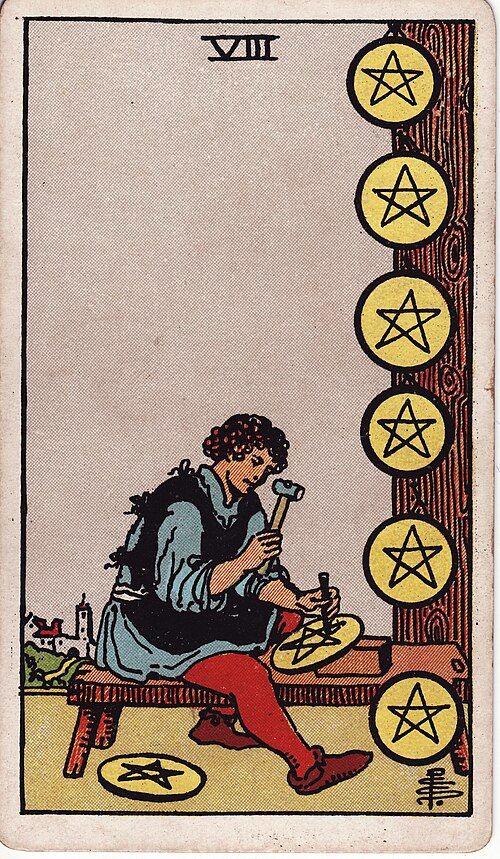

| Arcana | Minor |
| Suit | Pentacles |
| Element | Earth |
| Attribution | Sun in Virgo |
Eight of Pentacles
In shortPractice. Do the reps.
Upright
This is getting good at something by doing it over and over — practising, drafting, repeating until it works. It is one of the most reliably positive cards in the deck, because what it promises is entirely within your control: do the work and you will improve.
Reversed
The work goes wrong at one extreme or the other. Perfectionism that will not let anything be finished, or corners cut and quality slipping. It can also mean labour that has gone mechanical — competent, with no learning left in it.
The turn
Do the reps. Set a number and hit it before you judge the results.
Reading with your own deck?
Sage records the cards you actually pull, writes the reading, keeps every one, and shows you what keeps returning across them. Free, private, no account.